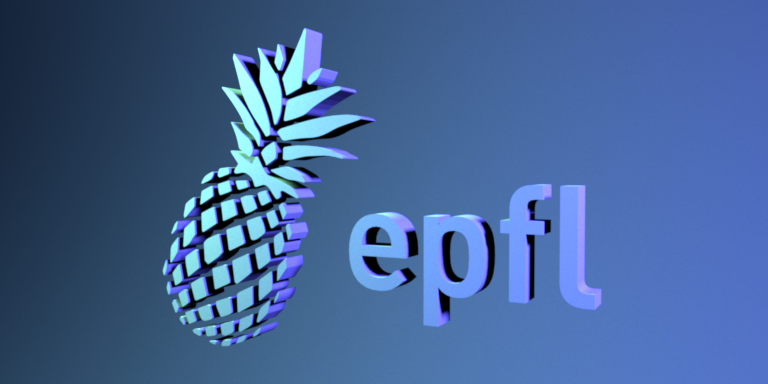
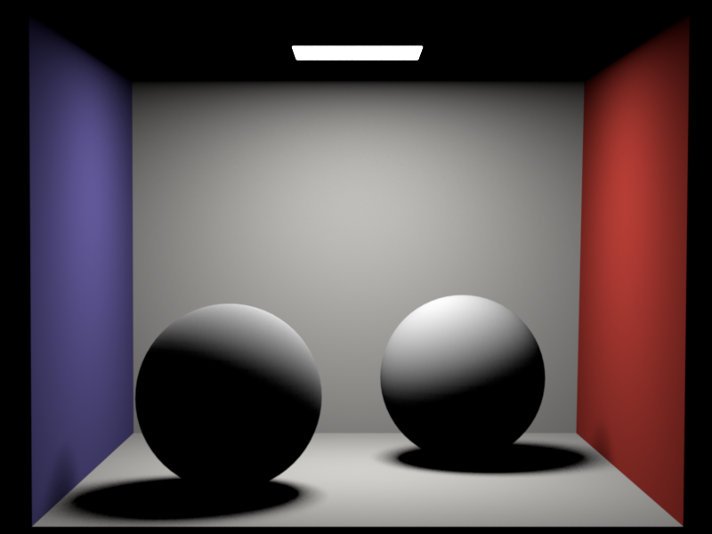
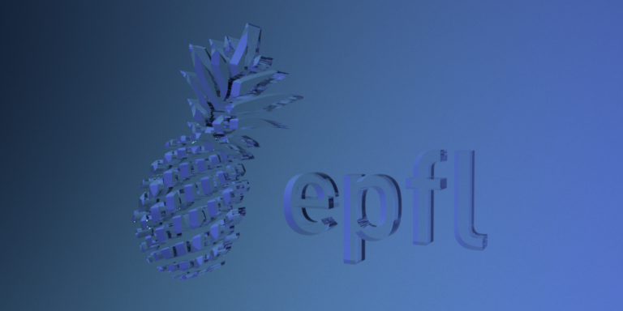
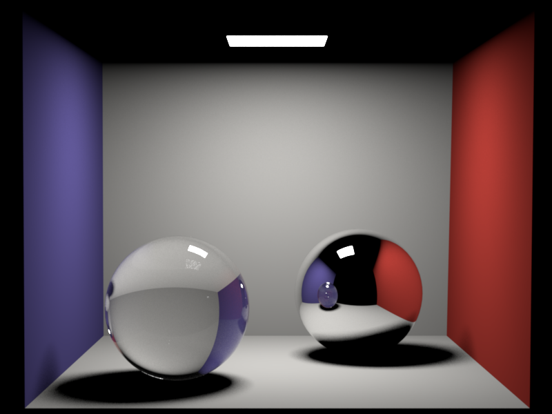
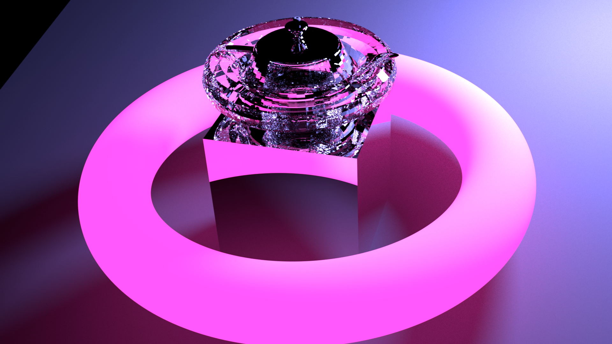
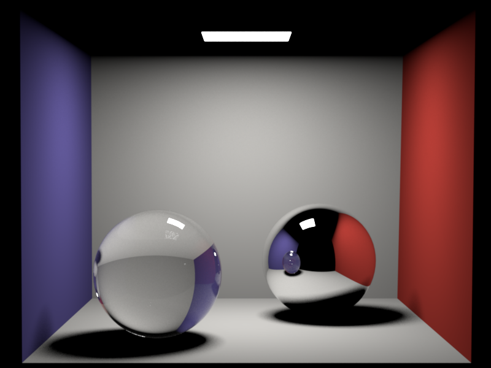
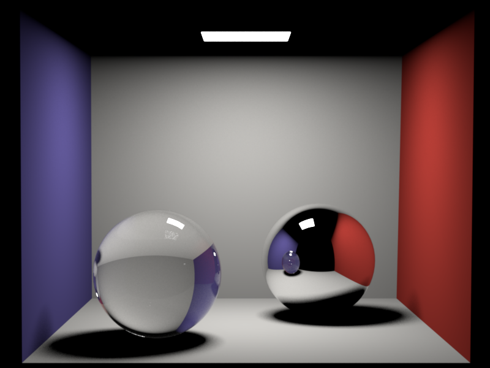

**Homework 4**
Student name: Federico Stella
Sciper number: 342796
Area lights (25 pts)
====================
First of all, I added the required method to Mesh. I named it `uniformSquareToUniformSurface` and it takes a 2D sample as input and outputs the PDF of the extracted sample on the Mesh surface. There are two more parameters for the function, which act as output parameters to return the sampled point on the surface and its associated normal (interpolated or computed). Additionally, two getters have been added to Mesh, one for the total surface area and one the inverse of that. The first one is computed anyway when computing the `DiscretePDF` for the Mesh, so I added it as it can be useful for other computations, and the other one is simply its inverse, for efficiency purposes.
In the `Emitter` interface, I added three methods that are analogous to the ones found in `BSDF`:
- `eval` is used to retrieve the radiance of the emitter in a specific direction. In case of an `AreaEmitter`, this is simply always the same as the radiance, but it leaves freedom to implement different behaviors.
- `pdf` returns the probability density for a point on the surface, which is simply the inverse of the mesh's total surface for an `AreaEmitter`. It is not defined outside of the surface.
- `sample`, which realizes the pdf above, calls the previously implemented Mesh method to draw a sample uniformly on the surface, in case of an `AreaEmitter`. For a different emitter, this function can have any behavior, and in fact it also takes an extra argument as input: the intersection point. In this way, it's possible to specialize an Emitter for a specific source, for example a Sphere, and produce a more efficient sampling for that point. In parallel, `pdf` also accepts the same extra parameter.
The Emitter interface also has two additional methods, one to get if the Emitter is associated to a mesh or not, as there could be other types of emitters, the other to set the associated mesh. When a Mesh is created and an Emitter is found for that mesh, the `activate` function will also associate the Emitter with the Mesh, so that the former can call functions from the latter and not only the other way round.
Distribution Ray Tracing (40 pts)
=================================
For the `WhittedIntegrator` I started from the previous ones and added the required BSDF functionality. I start by identifying all the emitters in the scene and picking one uniformly at random (accounting for this in the result), and sampling one point from this emitter by using the previously implemented methods. If the directions are compatible (cosine > 0) and if no intersection is found by a shadow ray, I query the intersection point with the direction connecting the sampled point on the light source and the intersection itself, and the original ray, in order to get the amount of light diffused by the object from the light source to the camera, following the specified formulas. If the intersection point is an emitter, its own radiance (via `eval`) is added to the final result.
Diffuse logo:

Cornell box (distributed):

Note: please commit both EXR and PNG versions of your renders in the `results/homework-X` folder.
Dielectrics (25 pts)
====================
In the `sample` function of `Dielectric` I use the `fresnel` function to solve Fresnel's equations and get the reflected amount. Using the provided uniform sample, I sample a proportional amount of reflected and refracted rays. In the first case, the Dielectric behaves similarly to `Mirror`, but also allowing internal reflections, which are not allowed in `Mirror`. In the second case, I re-solve Snell's equation (which was already solved in `fresnel`, so some computation can be saved by avoiding to use this method) to compute the refrecated direction in the local reference frame. Since the frame's normal is defined by the Mesh and not by the intersection, as in Snell's equations, special care is given when the cosine between the ray and the normal is negative, meaning that the ray is coming from inside the mesh.
Whitted-style ray tracing (10 pts)
==================================
For materials involving a Dirac's delta, thus whose distribution cannot be evaluated with the same method as for Diffuse materials (and it also wouldn't be efficient to do so), the material's BSDF is queried for a new ray direction, which can come from a reflection or a refraction, it doesn't matter. Starting from this new direction, recursion is applied to compute the result with a probabilistic cutoff.
Dielectric logo:

Cornell box (Whitted):

Note: please commit both EXR and PNG versions of your renders in the `results/homework-X` folder.
Artist Points (5 pts)
============================
I've spent a non-negligible amount of time getting to know Blender, which I had never used before, and managed to set up a pipeline to have a sufficiently Nori-like render preview in Blender before exporting the scene to Nori. As a discaimer to myself, remember that for Blender coordinates `(x,y,z)` Nori's coordinates are `(x,z,-y)`.
For the rendered scene I've added multiple meshes with different properties. There is a spherical light-blue area emitter outside of the rendered view, a big and highly-detailed torus which also emits pink light, a cubical mirror, a dielectric torus, a dielectric teapot and a small donut on top. The dielectric torus is made of clear glass, and is less detailed than the other toruses, showing diamond-like refractions. The teapot, instead, is the famous Utah Teapot, whose mesh I've found a this [link](https://sketchfab.com/3d-models/the-utah-teapot-1092c2832df14099807f66c8b792374d), and is a dielctric with a much lower refraction index than air, making it locally seem like we are in water and air is trapped in the teapot.
Overall a cute little scene that was fun to create and usefult to learn about Blender.

Possible new functionalities to implement in the near future to support better rendering:
- Render sample-wise and then block-wise, iteratively showing the rendering as it improves
- Render with a target noise, instead of blindly sampling N times each pixel
- Mesh attribute to discard vertex normals
- Mesh subdivision to increase mesh quality without increasing the triangle counting
Feedback
========
We would appreciate any comments or criticism to improve the projects in future years--naturally, this part will not be graded. Examples of information that is useful to us includes:
* How much time did you spend on the assignment? How was it divided between designing, coding, and testing?
*Around 2 days, including artist points and report. This time I didn't have time to do the hacker points unfortunately.*
* What advice should we have given you before you started?
* What was hard or surprising about the assignment?
* What did you like or dislike? What else would you change?
*I spent quite a bit of time without understanding the Emitter interface at all. I think this part of the assignment is underspecified, especially since we don't exactly know yet what to do with emitters. Moreover, it would come natural to me to do things a bit differently in terms of interfaces, but it is not really possible in the current architecture, which makes it a bit cumbersome to understand what the interface is supposed to be doing.*
 
